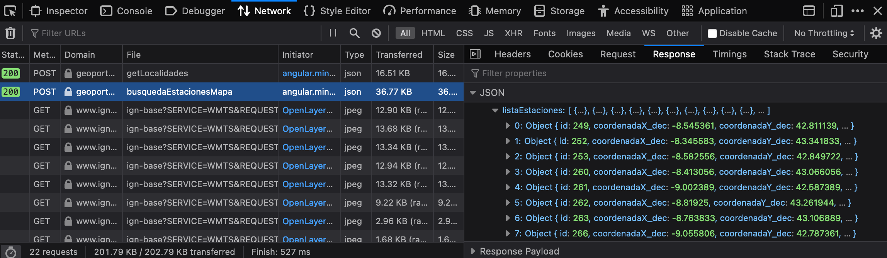
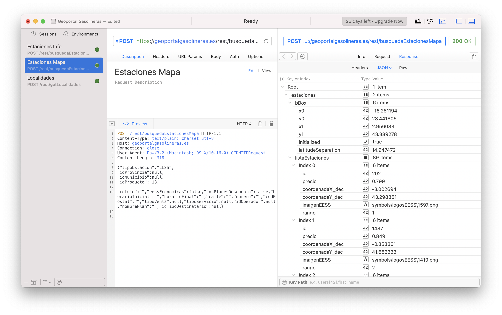

Desarrollando una librería para PHP


Esta entrada, primera en romper un poco con la temática del blog, relata de manera sencilla los pasos que he seguido para desarrollar una librería PHP. Si quieres ir directamente al repositorio del proyecto y echarle un vistazo haz clic aquí.
Ten en cuenta también que este texto no pretende ser didáctico, por lo menos no al nivel de detallar el procedimiento real, sino de dar una visión desde arriba.
Si algo me gusta de la comunidad creada al rededor del lenguaje PHP es la cantidad de librerías de terceros disponibles para añadir a tu proyecto como dependencia. Independientemente del caso de uso que necesites, siempre hay una librería disponible para usar en Packagist.
No obstante, Hace un par de días requería de una herramienta para interactuar con la API de Geoportal Gasolineras que mantiene el Ministerio de Transición Económica de España. Esta API obtiene información de todas las gasolineras de España, información como puede ser el precio de los combustibles, su localización o los servicios que ofrecen.
Desafortunadamente, no existe a día de hoy ninguna herramienta que permita a los desarrolladores interactuar con ella. Tras investigar un poco, solo pude encontrar un script que se encarga de descargar los datos y un proyecto en JavaScript no muy bien documentado. Vamos, que si quería interactuar con la API debería hacerlo a mano.
Por si no fuera suficiente, al ponerme a ello descubrí que la API no es para nada intuitiva y requiere de un trabajo inicial para descubrir todos sus endpoints y los parámetros que recibe, devuelve y cómo se comportan. Esto supuso una perfecta oportunidad para desarrollar una librería a medida que no solo me sirviese a mi, sino a cualquiera que en un futuro se encontrase en mi misma situación de necesidad. De esta maneera, aporto mi granito de arena a la comunidad de Software Libre, que me ha ayudado a mi durante todos estos años.
Haciendo ingeniería inversa
La API de Geoportal Gasolineras no está documentada en ningún sitio ni es visible al público, el único servicio que proporcionan es el de un mapa en su página web que permite ver las gasolineras y sus datos, filtrando los resultados mostrados a través de ciertos parámetros.
Aquí es cuando nos podemos dar de cuenta de un detalle: jugueteando con el mapa, ampliándolo y cambiando los filtros, se aprecia que el cambio de las gasolineras no es instantáneo. Como toda interfaz interactiva en un navegador, esta se realiza utilizando JavaScript. Este tipo de aplicaciones web suelen abstraer el funcionamiento del componente de la capa de datos, solicitando así los datos mediante peticiones AJAX hechas a APIs HTTP (normalmente REST).

Utilizando las herramientas de desarrollador del navegador y, en concreto, el visor de red, podemos ver cómo se realizan nueva peticiones HTTP cada vez que ampliamos el mapa o cambiamos los filtros. Aquí es donde podemos obtener los endpoints que está utilizando el mapa: la API. En especifico se puede apreciar los siguientes tipos de peticiones AJAX:
- Una petición cuando seleccionamos una provincia para obtener los municipios de dicha provincia y mostrarlos en un
selectpara seguir filtrando por municipio. - Una petición cuando cambiamos los filtros para obtener la lista de gasolineras y su localización.
- Una petición cuando amplimos el map lo suficente, que mostrará la información para cada gasolinera y que se actualiza cuando nos movemos por el mapa.
- Varias peticiones para cargar diversos recursos como pequeñas imgen que forman el mosaico del mapa.
Una vez tenemos los endpoints más relevantes, es hora de documentarlos para saber qué parámetros reciben y de qué forma. En este caso los desarrolladores del la web optaron por utilizar peticiones POST que reciben los parámetros en el cuerpo en formato JSON. Un poco extraño, sobre todo teniendo en cuenta que se envían todos los posibles parámetros a la vez, estén o no vacíos. Un poco sucio, pero me facilita el trabajo para encontrar las claves de los parámetros para filtrar los resultados.
Lo que quizás no ha sido tan maravilloso es el hecho de que algunos endpoints, a pesar de enviar los parámetros como JSON, en vez de devolverlos en JSON lo hacen en XML. No quiero preguntar. Tendremos que tenerlo en cuenta a la hora de implementar la librería para parsear correctamente el XML y mapear su información.
Diseñando la arquitectura
Los detalles de implementación, honestamente, no le importan a nadie. Una vez la librería esté desarrollada, gracias al poder de la abstracción, solo serán problema del que tenga que mantenerla. Sin embargo, sí es importante diseñar una buena interfaz con la que la librería será utilizada.
Inspirado en el mundo de Laravel y, en específico Eloquent, me pareció una buena idea ocultar los endpoints en una fachada y utilizar el patrón construcción para realizar la petición, para así poder personalizarla, al haber muchos parámetros opcionales. Además, eliminé al máximo de mis posibilidades la necesidad de utilizar números mágicos, gracias a la introducción de enumeraciones que contienen desde las posibles combinaciones de provincias, hasta los tipos de combustibles. ¿El resultado? Una forma muy fluida de interactuar con la API.
Veámolos con un antes y un después. Aquí se pude ver cómo se debía acceder antes a la API para obtener una lista de gasolineras. Pasando todos los parámetros (medio), aún sin necesitarlos, y luego parseando el JSON resultante (derecha).

Y así es cómo ahora se puede realizar de manera sencilla con la interfaz que proporciona la librería:
$stations = GasApi::locateGasStations()
->serviceType(ServiceType::SELF_SERVICE())
->fuel(Fuel::DIESEL_A())
->get();Creando la librería
Muy bien, el código está listo, correctamente probado con PHPUnit y funcional, me decía. Pero, ¿ahora qué se necesita hacer para poder instalarlo con composer? Resulta que tener tu librería disponible al público es muy sencillo. Tan solo es necesario, iniciar tu proyecto como un proyecto de composer. Esto simplemente requiere de un composer.json en la raíz del proyecto, configurándolo con pequeños detalles como un nombre.
Esto ya lo había hecho para poder añadir otras librerías al proyecto en las que me he basado para realizar la implementación y también las pruebas. Sin embargo, es muy sencillo de inicializar utilizando el comando composer init dentro del proyecto y siguiendo los pasos que la propia herramienta te da.
Una vez hecho eso, el siguiente paso es registrarse en Packagist. Packagist es el repositorio de todas las librerías que se pueden instalar cuando hacemos composer require flerex/spain-gas. Abrir al público la librería es tan sencillo como sincronizar nuestra cuenta de GitHub con Packagist y añadir a su lista nuestro repositorio.
Ultimando detalles
Independientemente de la funcionalidad que hayamos implementado, lo más importante es documentar todas las funcionalidades para que el que encuentre nuestra librería pueda entender at a glance de lo que se está hablando y cómo funciona. Para ello, añadí un Readme.md con los endpoints disponibles, la información que devuelven cada uno de ellos y algunos ejemplos de uso. Además, añadí una Wiki en la que se entra en profundidad sobre todo lo que se puede hacer con cada uno de los endpoints.
Para facilitar el desarrollo en IDEs como PhpStorm también he añadido comentarios PHPDoc para mostrar documentación extra y mostrar magic methods disponibles que el IDE no es capaz de reconocer de manera estática.
Licencia
Como ya sabemos, hacer público nuestro repositorio no implica que el proyecto sea Software Libre. Por defecto, la ausencia de una licencia implica que los derechos están reservados al autor.
Para permitir que el código se pueda utilizar y compartir es necesario asignarle una licencia, por ejemplo, añadiendo el texto legal en un fichero LICENSE en el repositorio. Como no soy un experto en licencias, he echado de mano de esta herramienta que te ayuda a decantarte por una de las muchas licencias de software.
Este es todo el proceso que he tenido que seguir para desarrollar mi primera librería Open Source para PHP. Si quieres echarle un vistazo no dudes en darle un visita al repositorio y, ya de paso, dale una estrella.